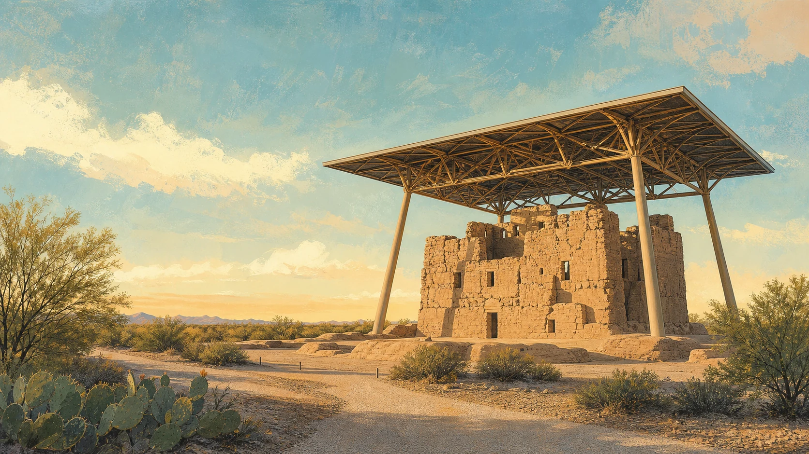

Sample listing
Desert Morning Coffee
Neighborhood coffee, quick breakfast, and a comfortable place to meet.
- Hours
- Accessibility
- Directions
A clearer way to explore Casa Grande
A directory-first community guide for independent businesses, everyday services, events, and useful local resources.
Showing a small demonstration directory for the first-version concept.
Browse by need
The first release stays focused: a manageable set of categories that residents and visitors can understand immediately.

Nearby heritage
Casa Grande Ruins National Monument is in nearby Coolidge. The protected Great House preserves the work and knowledge of Ancestral Sonoran Desert people and connects today’s communities with a much longer regional story.
Visit the official National Park Service guideDirectory preview
These sample entries demonstrate the planned information structure; they are not published business claims or endorsements.
Sample listing
Neighborhood coffee, quick breakfast, and a comfortable place to meet.
Sample listing
A model listing showing service areas, response times, and verified contact details.
Sample listing
A demonstration profile for locally made goods, gifts, and seasonal products.
Sample resource
A future curated view of public events, family activities, and community resources.
No sample listings match that search. Try a broader term or another category.
Who it serves
Casa Grande Local is designed for people who want dependable local information without digging through social feeds or national directories. The initial audience is residents searching for businesses and services, with visitors and local owners as important secondary users.
First-release plan
Launch with 20–30 carefully checked listings across four core categories.
Let businesses claim listings and correct their public details.
Label sponsored placement, moderate reviews, and publish clear correction policies.
Add events and editorial guides only after directory use reveals demand.